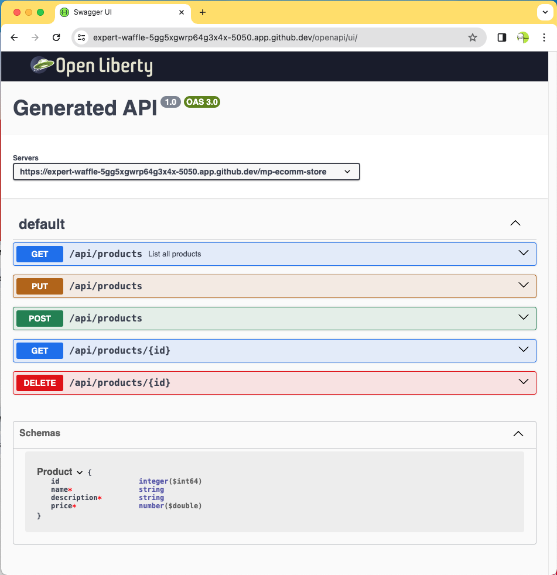

MicroProfile OpenAPI
Introduction
In previous chapters, you built Restful (Representational State Transfer) APIs that various clients can use to access your web services regardless of programming language or platform. However, clients need a clear and comprehensive contract that describes available endpoints, expected parameters, and response formats to integrate seamlessly with these web services. Organizations adopt the OpenAPI Specification to provide this well-defined API contract.
This chapter introduces MicroProfile OpenAPI and shows you how to document your RESTful services using OpenAPI annotations. You will learn to generate comprehensive API documentation that follows the OpenAPI Specification, then visualize and interact with your documented APIs using Swagger UI, a browser-based interface that makes your API contract immediately accessible to developers and stakeholders.
What you will learn
This chapter covers the following topics:
-
Understanding MicroProfile OpenAPI
-
Specifying APIs using MicroProfile OpenAPI
-
Generating API documentation
-
Documenting authentication and authorization
-
Exploring APIs using Swagger UI
-
Using new features in MicroProfile OpenAPI 4.1
OpenAPI Specification
The OpenAPI Specification (OAS), formerly known as Swagger, defines a standard format for describing and publishing REST APIs. It provides a language-agnostic interface to RESTful APIs. API providers use OAS to create machine-readable documents that describe their endpoints, request and response schemas, authentication requirements, and other API characteristics. This standardization enables powerful tooling: Integrated Development Environments (IDEs) can automatically generate client code. Testing frameworks can then verify your API’s functionality against its specification. Documentation tools can build interactive API explorers, all stemming from a single OpenAPI document.
|
The OpenAPI Initiative (a Linux Foundation collaborative project) maintains the specification. Industry leaders including Google, Microsoft, and Amazon contribute to this community-driven standard, which ensures it meets enterprise requirements while remaining vendor-neutral. |
When you adopt OpenAPI, you create a single source of truth that serves as both human-readable documentation and a machine-parsable contract. This approach simplifies API development, testing, and long-term maintenance while making your API more accessible to consumers.
Introduction to MicroProfile OpenAPI
The MicroProfile OpenAPI specification integrates the OpenAPI Specification (OAS) with Jakarta RESTful Web Services, previously known as JAX-RS. It provides Java annotations that automatically generate OpenAPI documentation directly from your Java code. This annotation-driven approach offers several advantages:
-
Your documentation stays always synchronized with your codebase
-
You do not need to maintain and juggle between separate specification files
-
The OpenAPI output is generated automatically when your application is deployed
-
The standard Jakarta REST endpoints work without any modifications
MicroProfile OpenAPI 4.0 supports OpenAPI Specification 3.1. This ensures your APIs are consistent, well-documented, and easily usable across a variety of development tools, testing frameworks, and API consumers.
Capabilities of MicroProfile OpenAPI
MicroProfile OpenAPI provides a set of annotations and APIs that allow you to generate OpenAPI 3.1-compliant specifications directly from your Jakarta REST code. Instead of manually writing YAML (YAML Ain’t Markup Language) or JSON (JavaScript Object Notation) specification files, you document your API using Java annotations, and MicroProfile OpenAPI generates the complete specification automatically.
The specification supports the full range of OpenAPI features:
-
Document endpoints: operations, parameters, request and response schemas, and examples
-
Specify API metadata: versioning, contact information, license details, and servers
-
Define data models: reusable schemas for your domain objects
-
Document authentication: security requirements and schemes
-
Describe responses: success and error responses with status codes
Your generated OpenAPI specification enables a rich ecosystem of tools. Documentation portals like Swagger UI create interactive API explorers. Code generators produce client libraries in multiple languages. Testing frameworks validate requests and responses against your specification. Mock servers simulate your API for development and testing.
MicroProfile OpenAPI ensures your documentation stays synchronized with your implementation, which eliminates the common problem of outdated API specifications.
Generating OpenAPI documents
MicroProfile OpenAPI provides multiple approaches to generate OpenAPI documentation. You can use annotations, static files, or a combination of both to create comprehensive API specifications.
Annotation-based generation
Add annotations to your Jakarta REST resources to generate documentation with MicroProfile OpenAPI. This annotation-driven approach keeps your documentation synchronized with your code. When you update an endpoint, you update its documentation at the same time.
Annotate your Jakarta REST classes and methods with OpenAPI annotations. MicroProfile OpenAPI scans your application at deployment time, discovers annotated endpoints, and generates a complete OpenAPI specification automatically.
This approach offers several benefits:
-
Documentation lives alongside the code it describes
-
IDE support for autocomplete and validation
-
Compile-time checking ensures annotations remain valid
-
No separate specification files to maintain
Static OpenAPI files (optional)
You can also provide a static OpenAPI document in .yaml or .json format at META-INF/openapi.yaml or META-INF/openapi.json. MicroProfile OpenAPI will merge this static content with the generated specification, which allows you to:
-
Add API-level metadata (title, version, contact information)
-
Define reusable schemas or security schemes
-
Override generated documentation for specific endpoints
However, for most applications, annotations alone provide sufficient documentation.
Selective documentation
Use the mp.openapi.scan.exclude.packages and mp.openapi.scan.exclude.classes configuration properties to exclude specific resources from documentation. This approach proves useful for internal or administrative endpoints you do not want to expose in your public API specification.
Using MicroProfile OpenAPI in your project
To use MicroProfile OpenAPI in your project, add the following Maven coordinates:
<dependency>
<groupId>org.eclipse.microprofile.openapi</groupId>
<artifactId>microprofile-openapi-api</artifactId>
<version>4.1</version>
<scope>provided</scope>
</dependency>|
Use |
Basic annotation example
To document Jakarta RESTful Web Services using MicroProfile OpenAPI, annotate your resource classes and methods with OpenAPI annotations.
The following example shows how to annotate a method in the ProductResource class:
// ...
@ApplicationScoped
@Path("/products")
@Tag(name = "Product Resource", description = "CRUD operations for products")
public class ProductResource {
//...
@GET
@Produces(MediaType.APPLICATION_JSON)
@Operation(summary = "List all products", description = "Retrieves a list of all available products")
@APIResponse(
responseCode = "200",
description = "Successful, list of products found",
content = @Content(
mediaType = "application/json",
schema = @Schema(implementation = Product.class)
)
),
@APIResponse(
responseCode = "400",
description = "Unsuccessful, no products found",
content = @Content(mediaType = "application/json")
)
public List<Product> getAllProducts() {
// Method implementation
}
}The annotations provide the following documentation:
-
@Tag: Groups related endpoints together in the documentation -
@Operation: Describes what the endpoint does -
@APIResponse: Defines a specific response with status code and content -
@Content: Specifies the response media type and structure -
@Schema: References the data model returned (in this case,Product.class)
|
The |
These annotations enrich the ProductResource class with metadata necessary for generating comprehensive OpenAPI documentation automatically.
|
Annotation scanning is enabled by default. If you need to disable it, you can set |
Build and run the application.
Viewing the generated documentation
To view the generated documentation, use the OpenAPI endpoint. Access the OpenAPI specification at the following URL:
http://<hostname>:<port>/openapi/Replace <hostname> and <port> with the actual hostname and port used by your runtime (for example, localhost:9080).
The /openapi endpoint returns the OpenAPI specification generated from the annotations in your source code. By default, it returns the specification in YAML format.
To receive the specification in JSON format instead, you can:
-
Set the
AcceptHTTP header toapplication/json:curl -H "Accept: application/json" http://localhost:9080/openapi -
Use the
formatquery parameter:http://localhost:9080/openapi?format=JSON
|
Context root behavior: The However, the generated OpenAPI document will include server URLs that reflect your application’s deployment context. For example, if you define |
When you access the http://localhost:9080/openapi URL, you see the API documentation that MicroProfile OpenAPI generated:
openapi: 3.1.0
components:
schemas:
Product:
type: object
properties:
id:
type: integer
format: int64
name:
type: string
description:
type: string
price:
type: number
format: double
info:
title: Generated API
version: "1.0"
paths:
/api/products:
get:
summary: List all products
description: Retrieves a complete list of products in the catalog.
tags:
- Products
responses:
"200":
description: Successfully retrieved product list
content:
application/json:
schema:
$ref: '#/components/schemas/Product'
"500":
description: Internal server error
tags:
- name: Products
description: Product catalog operations
servers:
- url: https://localhost:5050/mp-ecomm-storeMicroProfile OpenAPI generates API documentation for your resource class. You can use this documentation to learn about the API and how to use it. This documentation includes the following information:
-
The
/productsendpoint description -
The GET operation summary and details
-
Expected response codes (200, 500)
-
The JSON structure of the Product response
-
Grouping under the Products tag
MicroProfile OpenAPI allows developers to produce these specifications directly from their codebase by using annotations or providing OpenAPI documents statically. This direct generation ensures that the API documentation remains synchronized with the code.
Visualization tools like Swagger UI can render this specification, client generators can consume it, and testing frameworks can use it for validation.
Exploring APIs using Swagger UI
To open Swagger UI for the API documentation generated using MicroProfile OpenAPI, deploy your application to a server that supports MicroProfile, such as Open Liberty, WildFly, Quarkus, or Payara Micro. These servers automatically generate the OpenAPI documentation for your RESTful services based on the annotations in your code.
Visit the following URL to launch Swagger UI:
http://localhost:9080/openapi/uiSwagger UI renders this documentation in a user-friendly web interface. The following figure shows the Swagger UI for the Product REST resource.

Annotations
You can use MicroProfile OpenAPI annotations to document any Jakarta RESTful Web Services resource. You can also use the annotations with other Jakarta RESTful Web Services annotations, such as @Path and @Produces. Table 4-1 lists the most common annotations used to document RESTful web services.
| Annotation | Description |
|---|---|
|
Provides metadata about the entire API. It can include information such as the title, description, version, terms of service, and contact information. |
|
Used inside |
|
Specifies contact information for the API, used within |
|
Defines the license information for the API, also used within |
|
Describes a single API operation on a resource. |
|
Documents a response from an operation. |
|
A container for multiple |
|
Describes the request body of an HTTP request, specifying the content of the body and whether it is required. In MicroProfile OpenAPI 4.0 and later, request bodies are required by default ( |
|
Convenience annotation that simplifies documenting request bodies. Instead of using |
|
Convenience annotation for documenting responses. Instead of using |
|
Allows defining properties within a |
|
Provides schema details for a response or request body, specifying the data type, format, and constraints. |
|
Provides information on parameters to the operation, including query parameters, header parameters, and path parameters. |
|
Adds metadata to a single tag used by the operation. It helps in categorizing operations by resources or any other qualifier. |
|
Specifies the media type and schema of the operation’s request or response body. |
|
Allows the definition of reusable components such as schemas, responses, parameters, and more, which other annotations can reference. |
|
Specifies a security requirement for an operation, referencing security schemes defined in |
|
Provides additional external documentation for an API or operation. |
|
Specifies a callback URL for an asynchronous operation. |
|
Specifies multiple |
|
Describes a server that hosts the API, specifying URL and description, which can be global or specific to operations or paths. |
|
Describes operations available at a specific path. Primarily used to document webhooks in |
|
Used within |
|
Used within |
|
Used within |
|
Used within |
All of these annotations are defined in the org.eclipse.microprofile.openapi.annotations package.
Convenience annotation examples
MicroProfile OpenAPI 2.0 introduced convenience annotations that simplify common documentation patterns.
Using @RequestBodySchema
Instead of:
@POST
public Response createProduct(
@RequestBody(
description = "Product to create",
required = true,
content = @Content(
mediaType = MediaType.APPLICATION_JSON,
schema = @Schema(implementation = Product.class)
)
) Product product) {
// Implementation
}You can use:
import org.eclipse.microprofile.openapi.annotations.parameters.RequestBodySchema;
@POST
@RequestBodySchema(Product.class)
public Response createProduct(Product product) {
// Implementation
}Using @APIResponseSchema
Instead of:
@GET
@Path("/{id}")
@APIResponse(
responseCode = "200",
description = "Product found",
content = @Content(
mediaType = MediaType.APPLICATION_JSON,
schema = @Schema(implementation = Product.class)
)
)
public Response getProduct(@PathParam("id") Long id) {
// Implementation
}You can use:
import org.eclipse.microprofile.openapi.annotations.responses.APIResponseSchema;
@GET
@Path("/{id}")
@APIResponseSchema(value = Product.class, responseCode = "200", responseDescription = "Product found")
public Response getProduct(@PathParam("id") Long id) {
// Implementation
}Using @SchemaProperty
For inline schema property definitions:
import org.eclipse.microprofile.openapi.annotations.media.SchemaProperty;
@Schema(
description = "Order summary",
properties = {
@SchemaProperty(
name = "orderId",
description = "Unique order identifier",
example = "ORD-12345"
),
@SchemaProperty(
name = "total",
description = "Total order amount",
example = "99.99"
)
}
)
public class OrderSummary {
// Class implementation
}Configuration properties
MicroProfile OpenAPI provides configuration properties to control its behavior. Configure these properties in microprofile-config.properties.
Common configuration properties include:
-
mp.openapi.scan.exclude.packages- Comma-separated list of packages to exclude from scanning -
mp.openapi.scan.exclude.classes- Comma-separated list of classes to exclude from scanning -
mp.openapi.servers- Comma-separated list of global server URLs -
mp.openapi.filter- Fully qualified name of an OASFilter implementation class -
mp.openapi.model.reader- Fully qualified name of an OASModelReader implementation class
|
Configuration property names are available as constants in the |
Example: Exclude internal packages from scanning:
mp.openapi.scan.exclude.packages=io.myapp.internal,io.myapp.adminExample: Configure custom servers:
mp.openapi.servers=https://api.example.com/v1,https://api-staging.example.com/v1Features in MicroProfile OpenAPI 4.x
MicroProfile OpenAPI 4.0 introduced support for OpenAPI Specification 3.1, and version 4.1 added clarifications and convenience methods.
Jakarta Bean Validation integration
MicroProfile OpenAPI automatically processes Jakarta Bean Validation annotations and uses them to enhance the generated OpenAPI schemas. Common validation annotations include:
-
@NotNull,@NotEmpty,@NotBlank- Mark fields as required or with minimum constraints -
@Size(min, max)- Set minimum and maximum length for strings, arrays, or objects -
@Min(value),@Max(value)- Set numeric range constraints -
@DecimalMin,@DecimalMax- Set decimal range constraints with optional exclusive boundaries -
@Positive,@Negative- Enforce positive or negative numeric values
Example:
public class Product {
@NotNull
@Positive
private Long id;
@NotBlank
@Size(min = 3, max = 100)
private String name;
@DecimalMin("0.01")
@DecimalMax("999999.99")
private BigDecimal price;
}The generated schema includes validation constraints such as minimum, maximum, minLength, maxLength, and pattern based on the annotations. Disable Bean Validation processing using mp.openapi.scan.beanvalidation=false if needed.
Documenting asynchronous operations with callbacks
MicroProfile OpenAPI supports documenting callbacks—HTTP requests your API makes to client-provided URLs. This is useful for webhook notifications and asynchronous processing patterns.
Using @Callback annotation
Document callbacks using the @Callback annotation. The client provides a callback URL, and your API calls that URL when processing completes:
@POST
@Path("/process-async")
@Operation(summary = "Process product asynchronously")
@APIResponse(responseCode = "202", description = "Processing initiated")
@Callback(
name = "productProcessed",
callbackUrlExpression = "{$request.body#/callbackUrl}",
operations = {
@CallbackOperation(
method = "post",
summary = "Product processing completed",
requestBody = @RequestBody(
description = "Processing result",
content = @Content(
mediaType = MediaType.APPLICATION_JSON,
schema = @Schema(implementation = ProcessResult.class)
)
)
)
}
)
public Response processProductAsync(AsyncProductRequest request) {
// Initiate async processing
return Response.accepted()
.entity("{\"message\": \"Processing initiated\"}")
.build();
}Key elements:
-
callbackUrlExpression- JSON Pointer to extract the callback URL from the request (e.g.,{$request.body#/callbackUrl}) -
@CallbackOperation- Defines the HTTP request your API will make to the client’s URL -
method- HTTP method for the callback (typically "post") -
requestBody- Payload your API sends to the callback URL
The callback pattern: (1) Client sends request with callback URL, (2) API responds immediately (202 Accepted), (3) API processes asynchronously, (4) API POSTs results to client’s callback URL.
Using security schemes in OpenAPI documentation
|
MicroProfile OpenAPI documents security requirements but does not enforce them. You must first implement access controls in your application using security frameworks (such as MicroProfile JWT, Jakarta Security, or your runtime’s security features), and then use OpenAPI annotations to document how clients should authenticate with your API. |
Security is a critical aspect of API documentation. MicroProfile OpenAPI 4.1 provides comprehensive support for documenting various security schemes including API keys, HTTP authentication, OAuth2, and OpenID Connect.
Documenting security schemes
Security schemes are defined at the application level using @SecurityScheme annotations:
package io.microprofile.tutorial.store.product;
// ...
@ApplicationPath("/api")
@OpenAPIDefinition(
info = @Info(
title = "Secured Product API",
version = "1.0.0",
description = "Product API with multiple security schemes"
)
)
@SecurityScheme(
securitySchemeName = "bearer",
type = SecuritySchemeType.HTTP,
description = "JWT Bearer token authentication",
scheme = "bearer",
bearerFormat = "JWT"
)
public class ProductRestApplication extends Application {
}This example shows Bearer token authentication. You can define multiple security schemes including API keys, OAuth2, and OpenID Connect.
Applying security to operations
Apply security requirements to individual operations using @SecurityRequirement:
@GET
@Path("/{id}")
@SecurityRequirement(name = "bearer")
public Response getProduct(@PathParam("id") Long id) {
return Response.ok(productService.findById(id)).build();
}The generated OpenAPI document includes security requirements that describe how clients must authenticate. Swagger UI displays these requirements and allows users to provide credentials before testing secured endpoints.
Security in Swagger UI
When you view the documented API in Swagger UI, security schemes appear in several ways:
-
A lock icon (🔒) appears next to secured operations
-
An Authorize button allows testers to input credentials
-
Required scopes display for each operation
-
Operations can be tested with provided authentication
This makes it easy for API consumers to understand authentication requirements and test secured endpoints interactively.
Summary
In this chapter, you learned how MicroProfile OpenAPI 4.1 enables automatic generation of OpenAPI v3.1-compliant documentation for your RESTful web services.
Core concepts
You learned about the OpenAPI Specification, a standard, language-agnostic format for describing REST APIs. You discovered how MicroProfile OpenAPI integrates this specification with Jakarta REST through annotations that automatically generate documentation from your code, keeping your API contracts synchronized with your implementation.
Key features demonstrated
Annotation-based documentation
You learned to document your RESTful endpoints using core OpenAPI annotations including @Operation, @APIResponse, @Tag, @Content, and @Schema. You saw how to apply these annotations to Jakarta REST resources to generate complete API specifications automatically.
Convenience annotations
You explored MicroProfile OpenAPI’s convenience annotations that simplify common documentation tasks. You learned to use @RequestBodySchema to document request bodies concisely, @APIResponseSchema to document response types efficiently, and @SchemaProperty to define inline schema properties without creating separate classes.
Nullable type handling
You learned how MicroProfile OpenAPI 4.1 supports improved nullable type handling aligned with OpenAPI v3.1, using the @Schema annotation’s nullable property to generate standard-compliant type arrays in the specification.
Jakarta Bean Validation integration
You discovered how validation annotations like @NotNull, @Size, @Min, and @Max automatically enhance your OpenAPI documentation, providing accurate constraints and requirements without duplicating information.
Asynchronous operations
You learned to document asynchronous operations using the @Callback annotation, showing how your API initiates async processing and notifies clients through webhook callbacks when operations complete.
Security documentation
You explored how to document security requirements using @SecurityScheme and @SecurityRequirement annotations. You learned to apply security at both the application and operation levels using Bearer token authentication as an example.
Viewing and testing APIs
You learned how to access your generated OpenAPI specification through the /openapi endpoint in both YAML and JSON formats. You discovered how to use Swagger UI at /openapi/ui to interactively explore and test your documented APIs in a browser-based interface.
Configuration and customization
You learned about MicroProfile OpenAPI configuration properties that control documentation behavior, including selective scanning to exclude internal endpoints and defining custom server URLs. You also learned about the option to provide static OpenAPI files that merge with generated documentation.
Practical applications
This annotation-driven approach keeps documentation synchronized with your implementation, avoiding the common problem of outdated specifications. The generated OpenAPI documents enable automatic client SDK generation, interactive API exploration via Swagger UI, integration with API gateways, contract testing frameworks, and API discovery in enterprise environments.
Your APIs are now well-documented, standards-compliant, and easily discoverable by consumers.